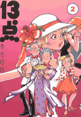
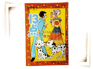
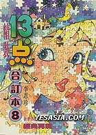

|
Problem F: Trouble of 13-Dots |
|
Time limit: 2 seconds |
Do you know 13-Dots? She is the main character of a well-known Hong Kong comic series. She is famous of her beauty, as well as the variety of stylish clothes she wears. Here are some pictures of 13-Dots that I found on the Web:
  
Now 13-Dots is facing a problem. She used to have a large amount of pocket money every month. However, her father has decided to cut down her budget of buying new clothes! In the past, she would buy every dress she liked without hesitation, but now she needs careful consideration before making any purchase. Every month, she prepares a list containing the prices and 'favour indices' (ranging from 1 to 5) of all items she is interested. At the end of the month, she would decide how to spend her money such that the total favour value is maximized. It is important to know that 13-Dots always uses her credit card to pay the bill, which offers her a 200-dollar refund if her total expense in the month exceeds $2000. For example, if her budget is $5000, she can buy clothes with total marked price of at most 5200 dollars.
Since the optimal way is hard to be figured out just by hand, can you write a program for 13-Dots that helps her make the decision? Remember that you should NEVER select an item more than once, even if this leads to a greater total favour value.
The input consists of several test cases. Each of them has the following format:
The first line gives two integers, m and n (0 ≤ m ≤ 10000, 0 ≤ n ≤ 100), which are the amount of pocket money 13-Dots has and the number of items on the list respectively. The following n lines each contains two integers, p and f (0 < p ≤ 4000, 1 ≤ f ≤ 5), where p is the marked price of the item, and f is its 'favour index'.
Input is terminated by EOF.
For each test case, print one line giving the maximum total favour value 13-Dots can get.
500 4 100 2 100 3 200 3 400 4
8